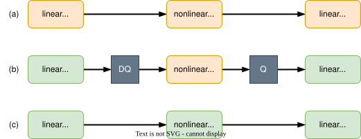
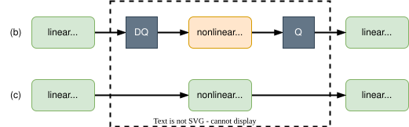
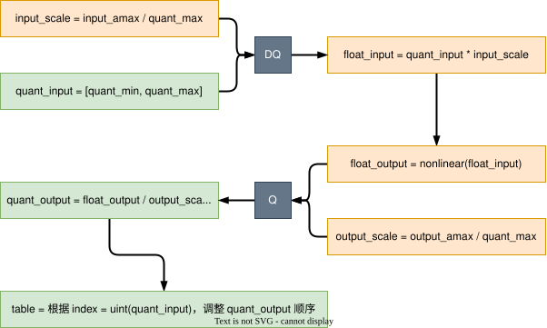

查表法量化激活函数
前言
本文将讲述基于查表法来实现激活函数的量化。因为目前没有实际负载的实现，所以标注为“口嗨版”。当然后续会抽空做实际负载的实验（目标是 Transformer），争取早日抹掉这个标注。不过实现的单个量化算子，都提供了测试用例。
项目地址：https://github.com/yehangyang/Activation_Function_Quantization
动机
首先交代一下激活函数量化的需求从何而来。为了提高模型推理速度，一些算子被做成量化算子，在整型域上进行计算（e.g. int8 量化，还有更激进的 int4 量化）。通常情况下线性计算实现量化是比较简单的，因为不是本文讨论重点，这里不做赘述。
而在模型设计中，线性层的后面通常会跟一个非线性层（也就是所谓的激活函数）。例如现在有下图（a）这样一个模型。如果只能对线性层做量化，那么只能得到下图（b）这样的效果，量化和非量化算子之间会穿插很多 Q/DQ 节点（也就是量化和浮点间的转化）。而我们希望看到下图（c）的效果，也就是希望激活函数也能进行量化计算。

观察上图（b），nonlinear 的输出会再次被量化，作为下一个量化 linear 的输入。细想，量化其实同时在边界上和数量上限制了表示范围。以 int8 量化为例，linear 输出的 \(X \in [-128, +127]\)（边界限制），可由 256 个数表示（数量限制）。此时如果 nonlinear 由浮点实现，则 \(X\) 需要被反量化（\(x' = scale_x · X\)），才能作为浮点 nonlinear 的输入。请不要以为做了反量化变成浮点数了，\(x'\) 的边界和数量限制就解除了，它仍旧被限制在 \([-128scale_x, +127scale_x]\)，数值表示数量为 256 不变（并且可以和反量化前一一对应）。在浮点域做完 nonlinear 之后，\(y = nonlinear(x')\)，限制仍然存在（仍然保持一一对应）。为了能成为下一个量化 linear 的输入，需要对 \(y\) 量化，\(Y = [\frac {y} {scale_y}]\)，限制依旧在（一一对应）。费劲周章，最后得到的还是 256 种数值结果，所以我们为什么不借助“一一对应”的传递性，用查表法来得到 nonlinear 的量化结果呢？
总结一下，我们的动机是希望通过量化非线性激活函数来实现全模型的量化（上图（b）到上图（c）的转变），并且根据分析是可以通过查表法来实现量化非线性激活函数，且可以保证无误差。
正如《动机》章节描述，我们将用查表法来实现非线性激活函数的量化。量化非线性激活函数是为了实现图中（c）的 nonlinear(int8) 等效替换（b）的 DQ -> nonlinear(float) -> Q 过程。

测试代码
代码地址
不同激活函数的查表实现可能存在差异，但是测试设计肯定是一致的，所以把测试设计放在功能设计前面。测试时需要保证在相同量化输入下，（b）和（c）两者量化输出的数值是完全相等的。如代码块所示，其中：
- L20 表示（c）的虚线框过程，量化结果为quant_output。
- L23~L25 表示（b）的虚线框过程，量化结果为ground_truth_quant_output。
- L28 是元素比较，quant_output应该与ground_truth_quant_output完全相等。
| def __check_symmetric_quant(quant_cls: _SymmetryQuant, float_func: Callable, input_amax: float, bit: int,
narrow: bool) -> bool:
"""Check whether the output of quant_cls is correct
Args:
quant_cls (_SymmetryQuant): an symmetric quantization operator
float_func (Callable): ground truth function in floating-point
input_amax (float): the amax of input for quantization
bit (int): the bit number of quantization
narrow (bool): Ture: quant_min = -2^(bit - 1) + 1, False: quant_min = 2^(bit - 1)
Returns:
bool: Ture: all elements of quantization function output are correct, False: any elements is wrong
"""
input_shape = (1, 128)
quant_input = torch.randint(utils.quant_min(bit, narrow), utils.quant_max(bit) + 1, input_shape, dtype=torch.int8)
# (quant_input) -> quant_func -> (quant_output)
quant_func = quant_cls(input_amax, bit, narrow)
quant_output = quant_func(quant_input)
# (quant_input) -> DQ -> float_func -> Q -> (quant_output)
ground_truth_float_input = utils.dequantize(quant_input, quant_func.input_scale)
ground_truth_float_output = float_func(ground_truth_float_input)
ground_truth_quant_output = utils.quantize(ground_truth_float_output, quant_func.output_scale, bit, narrow)
# every element should be the same
return (quant_output == ground_truth_quant_output).all()
|
功能代码
代码地址
功能实现的关键是生成查表法用到的映射表。以对称量化为例，获取映射表 table 的流程如下图所示。

代码实现如下面代码块所示，其中：
- L21～L33：生成映射表 table 的代码（在__init__函数中可见）
- L36：前向推理时的查表过程
| class _SymmetryQuant(torch.nn.Module):
def __init__(self,
func: Callable,
input_amax: float,
bit: int,
narrow: bool = False,
output_amax: float = None) -> None:
"""Initialize quant-input to quant-output mapping table for symmetry quantization.
Args:
func (Callable): corresponding standard floating-point function
input_amax (float): the amax of input for quantization
bit (int): the bit number
narrow (bool, optional): True: quant_min = -2^(bit - 1) + 1. Defaults to False, quant_min = -2^(bit - 1)
output_amax (float, optional): the amax of output for quantization.
Defaults to None, the amax = amax(nonlinear(DQ(quant_input)))
"""
super().__init__()
# (input_quant) -> DQ -> (input_float)
self.__input_scale = input_amax / quant_max(bit)
input_quant = torch.arange(quant_min(bit, narrow), quant_max(bit) + 1, dtype=torch.int8)
input_float = input_quant * self.__input_scale
# (input_float) -> float_func -> Q -> (output_quant)
output_float = func(input_float)
output_amax = output_amax if output_amax else torch.absolute(output_float).max()
self.__output_scale = output_amax / quant_max(bit)
output_quant = quantize(output_float, self.__output_scale, bit, narrow)
# adjust sequence of output_quant for easier retrieve
index = quant_max(bit) if narrow else quant_max(bit) + 1
self._table = torch.cat((output_quant[index:], output_quant[:index]))
def forward(self, x: torch.Tensor):
y = self._table[x.to(torch.int64)]
return y
@property
def input_scale(self):
return self.__input_scale
@property
def output_scale(self):
return self.__output_scale
|
至此完成非线性激活函数量化查表法的最普适实现，i.e.，适合任何一个非线性激活函数的量化实现（除了 Softmax）。在同一个网络中，可能会包含多个非线性激活函数。如果每个激活函数都使用查表法实现，以 int8 量化为例，每个激活函数的查表实现需要花费 256 Byte 的内存。如果激活函数数量稍多一点，内存占用还是比较厉害的。不过如果我们稍加限制，譬如在同一个网络中，同一种激活函数的输入/输出 scale 能分别限制为相同，或者限制在少量组合中，那么查表法使用的表格数量就能减少。e.g., 一个网络中有 30 个 Sigmoid 激活函数，其中 10 个的输入/输出 scale 是相同的，那么就能共用一个表；如果条件允许，30 个 Sigmoid 的输入/输出 scale 都分别相同，那就都能共用同一个表，内存占用一下子缩小 30 倍。
话说回来，这个内存占用与一个卷积核 [N, C, H, W] = [4, 8, 3, 3] 差不多（同样以 int8 量化来比较），而通常的卷积核是该例子的好几倍。
接下来的小节会根据各激活函数的特性，给出一些特例设计，试图进一步提升推理性能（通常是内存和计算之间的博弈）。还会讨论如何实现 Softmax 的量化。
Softmax
表达公式：\(y_i = \frac{e^{x_i}}{\sum_{i}^{n} e^{x_i}}\)
函数曲线：没有固定曲线
数学推演
消除 max
计算 softmax 的第一步通常都是做如下这样一个等价变化，来保证求和时不会发生数据溢出，
\[
y_i = \frac{e^{x_i}}{\sum_{i}^{n} e^{x_i}} = \frac{e^{x_i - offset}}{\sum_{i}^{n} e^{x_i-offset}}, offset = \max_{i \in n}(x_i)
\]
随后将问题拆解为如何得到 \(e^{x_i - \max_{i \in n}(x_i)}\)。代入量化的表达式 \(x_i = scale_x X_i\)，得，
\[
e^{scale_x X_i - \max_{i \in n}(scale_x X_i)} = e^{scale_x(X_i - \max_{i \in n}(X_i))}
\]
对于 \(X\)（量化 tensor）而言，
\[
\max_{i \in n}(X_i) \le Q_{max}, i.e., scale_x \max_{i \in n}(X_i) \le scale_x Q_{max}
\]
于是将 \(offset\) 设定为 \(scale_x Q_{max}\)，等价变化仍然成立，同时避免求和时发生数据溢出。即，
\[
y_i = \frac {e^{scale_x X_i - scale_x Q_{max}}}{\sum_{i}^{n}e^{scale_x X_i - scale_x Q_{max}}} = \frac {e^{scale_x (X_i - Q_{max})}} {\sum_{i}^{n} e^{scale_x (X_i - Q_{max})}}
\]
\[
t_i = e^{scale_x(X_i - Q_{max})}, t_i \in (0, 1)
\]
正如推演公式所示，这种方式可以省去求最大值的操作。
确定分母映射表
我的目标是实现 softmax 的全量化，所以也会对 \(t_i\) 做量化，在整数域进行计算。
为了能实现对 \(t_i\) 做量化，目前缺少的条件是 \(t_i\) 输出的量化 \(scale\) 值。于是这一小节将推演如何确定 \(t_i\) 的输出量化 \(scale\)。根据前面的推演，简化公式，并带入 \(t_i\) 的量化表达 \(t_i = scale_t T_i\)，化简如下，
\[
y_i = \frac {t_i} {\sum_{i}^{n} t_i} = \frac {scale_t T_i} {\sum_{i}^{n} scale_t T_i} = \frac {T_i} {\sum_{i}^{n}T_i}
\]
至此证明 \(t_i\) 的量化输出可以直接用于计算，i.e., 可以在整数域进行累加和除法操作。
接下来要确定 \(scale_t\) 的取值。在确定 \(scale_t\) 的取值时，需要结合硬件的整数累加器来考虑。看到整数累加，通常会引起做量化同学的警惕。累加结果（包括中间结果）会被存到硬件的累加器（\(acc\)）中。而累加器位宽（\(bit_{acc}\)）通常都是固定的。位宽固定，累加的上限也就确定，令其为 \(Q_{acc}^{max} = 2^{bit_{acc} - 1} - 1\)，在 softmax 这个场景中，甚至可以用无符号表示，因为 \(T\) 肯定大于零。\(T\) 的每个元素值大小是千变万化的，\(T\) 的元素个数 \(n\) 是可以确定的。根据 \(Q_{acc}^{max}\) 和 \(n\)，可以作以下约束，
\[
\max_{i \in n}(T_i) n \le Q_{acc}^{max}
\]
\[
\max_{i \in n}(T_i) \le \frac {Q_{acc}^{max}} {n}
\]
为了充分利用 \(acc\) 的每个 \(bit\) 位，令
\[
\max_{i \in n}(T_i) =\left \lfloor \frac {Q_{acc}^{max}} {n} \right \rfloor
\]
由前面的推理 \(t_i \in (0, 1)\)，根据计算量化公式，\(scale = \frac {F_{max}} {Q_{max}}\)，可得，
\[
scale_t = \frac {\max_{i \in n}(t_i)} {\max_{i \in n}(T_i)} = \frac {1} {\max_{i \in n}(T_i)}
\]
就此确定分母中 \(T\) 的量化缩放因子 \(scale_t = \frac {1} {\max_{i \in n}T_i}\)。并且 \(\frac {1} {\max_{i \in n}T_i}\) 是允许的最小 \(scale_t\)，如果 \(scale_t > \frac {1} {\max_{i \in n}T_i}\)，就存在 \(acc\) 溢出的风险。
综上，
\[
scale_t = \frac {1} {\max_{i \in n}T_i} = \frac {1} {\left \lfloor \frac {Q_{acc}^{max}} {n} \right \rfloor}
\]
所以只要确定 \(acc\) 的位宽 \(bit_{acc}\)（用来确定 \(Q_{acc}^{max}\)）和元素个数 \(n\)，就能确定分母中 \(T\) 的缩放因子 \(scale_t\)。至此的公式推演可以支撑实现 X -> T 的查表实现。
确定分子映射表
首先回到简化公式，\(y_i = \frac {T_i} {\sum_{i \in n} T_i}\)，带入量化表达 \(y_i = scale_y Y_i\) 得，
\[
y_i = scale_y Y_i = \frac {T_i} {\sum_{i \in n} T_i}
\]
\[
Y_i = \frac { \frac {T_i} {scale_y} } {\sum_{i \in n} T_i}
\]
因为 \(y_i \in (0, 1)\)，所以 \(scale_y < 1\)。如果 \(\frac {T_i} {scale_y}\) 只保留整数相当于又做了一次量化（第一次是 \(T_i = \frac {t_i} {scale_t}\)）。于是需要确定用多大位宽来存放 \(\frac {T_i} {scale_y}\)，可以保证不发生溢出问题。
因为 \(\max_{i \in n}y \in [\frac {1} {n}, 1)\) 当 \(n = 1\) 时, \(\max_{i \in n} y_i = 1\) 即 \(\min(\max_{i \in n}y_i) = \frac {1} {n}\)
再结合 \(scale_y = \frac { \max_{i \in n} y} {Q_{output}^{max}}\) 可得，
\[
\min(scale_y) = \frac {\min(\max_{i \in n}y)} {Q_{output}^{max}} = \frac {1} {n Q_{output}^{max}}
\]
于是，
\[
\max( \frac {T_i} {scale_y}) = \frac {\max_{i \in n}T_i} {\min(scale_y)} = \frac {Q_{acc}^{max}} {n} n Q_{output}^{max} = Q_{acc}^{max} Q_{output}^{max}
\]
等式的推论是，分子 \(\frac {T_i} {scale_y}\) 需要位宽 \(bit_{acc} + bit_{output}\) 来存放，这样可以完全避免溢出问题。将之前的等式重新梳理一下，
\[
Y_i = \frac { \frac {T_i} {scale_y}} {\sum_{i}^{n}T_i} = \frac { \frac {t_i} {scale_t scale_y}} {\sum_{i}^{n} T_i} = \frac {P_i} {\sum_{i}^{n}T_i}
\]
其中 \(P_i = \frac {t_i} {scale_t scale_y}\)，也就是将两次量化等效为一次。说等效其实不合适，因为两次并一次，可以减少一次 round 误差。至此的公式推演可以支撑实现 X -> P 的查表实现。
功能代码
根据等式关系，
\[
Y_i = \frac {P_i} {\sum_{i}^{n}T_i}
\]
\[
P_i = \left \lfloor \frac {t_i} {scale_t scale_y} \right \rfloor
\]
\[
T_i = \left \lfloor \frac {t_i} {scale_t} \right \rfloor
\]
\[
t_i = e^{scale_x (X_i - Q_{input}^{max})}
\]
\[
scale_t = \frac {1} {\max_{i \in n} T_i} = \frac {1} {\left \lfloor \frac {Q_{acc}^{max}} {n} \right \rfloor}
\]
可以设计两个映射表分别是 X -> T 和 X -> P，其中 \(X\) 用 \(bit_{input}\) 位宽存放，\(T\) 与 \(acc\) 保持一致用 \(bit_{acc}\) 位宽存放，\(P\) 用 \(bit_{acc} + bit_{output}\) 位宽存放。
代码地址
| class Softmax(torch.nn.Module):
def __init__(self,
dim_len: int,
input_bit: int,
input_amax: float,
input_unsign: bool,
output_bit: int,
output_amax: float,
output_unsign: bool = True,
acc_bit: int = 16,
narrow: bool = False,
dim: int = None) -> None:
super().__init__()
assert (input_bit <= 8)
self._dim = dim if dim else -1
self._dim_len = dim_len
self.input_qconfig = QuantConfig(bit=input_bit, narrow=narrow, unsign=input_unsign, amax=input_amax)
self.output_qconfig = QuantConfig(bit=output_bit, narrow=narrow, unsign=output_unsign, amax=output_amax)
# (input_quant) -> minus_max -> DQ -> float_func -> (exp_float)
input_quant = self.input_qconfig.range.to(torch.int32)
input_quant_minus_max = input_quant - self.input_qconfig.quant_max
input_float_minus_max = self.input_qconfig.dequantize(input_quant_minus_max)
exp_float = torch.exp(input_float_minus_max)
acc_quant_max = quant_max(bit=acc_bit, unsign=False)
# denominator
denominator_scale = 1 / (acc_quant_max // dim_len) # denominator allowed min quant scale
self.denominator_element_qconfig = QuantConfig(bit=acc_bit, narrow=False, unsign=False, scale=denominator_scale)
# (exp_float) -> Q -> (denominator_element_quant)
denominator_element_quant = self.denominator_element_qconfig.quantize(exp_float)
# numerator
numerator_bit = acc_bit + output_bit
numerator_scale = denominator_scale * self.output_qconfig.scale
self.numerator_qconfig = QuantConfig(bit=numerator_bit, narrow=False, unsign=False, scale=numerator_scale)
# (exp_float) -> Q -> (numerator_quant)
numerator_quant = self.numerator_qconfig.quantize(exp_float)
# adjust sequence of output_quant for easier retrieve
if input_unsign:
self._denominator_element_table = denominator_element_quant
self._numerator_table = numerator_quant
else:
index = self.input_qconfig.quant_max if narrow else self.input_qconfig.quant_max + 1
self._denominator_element_table = torch.cat(
(denominator_element_quant[index:], denominator_element_quant[:index]))
self._numerator_table = torch.cat((numerator_quant[index:], numerator_quant[:index]))
def forward(self, x: torch.Tensor):
denominator_element = self._denominator_element_table[x.to(torch.int64)]
denominator = torch.sum(denominator_element, dim=self._dim)
numerator = self._numerator_table[x.to(torch.int64)]
y = numerator / denominator
y = torch.clamp(y, self.output_qconfig.quant_min, self.output_qconfig.quant_max)
y = y.to(self.output_qconfig.dtype)
return y
|
测试代码
代码地址
测试代码和测试设计中提到的会有所不同。因为 Softmax 不是简单查表就能实现的，过程中存在累加和除法，所以存在无法避免的误差。在测试代码中，将量化输出的最大绝对值误差（max absolute error）限定在 1 以内（包括 1），也就是等价浮点输出误差在 output_quant_scale 以内，对应代码块 L19。
| def _check_symmetric_quant_table_softmax(dim_len_range: Tuple[int],
input_bit_range: Tuple[int],
input_amax_range: Tuple[float],
input_unsign_range: Tuple[bool],
output_bit_range: Tuple[int],
output_amax_range: Tuple[float],
output_unsign_range: Tuple[bool] = (False,)):
for dim_len in tqdm(range(dim_len_range[0], dim_len_range[1]), desc=f'Testing {Softmax}'):
for input_bit in input_bit_range:
for input_amax in input_amax_range:
for input_unsign in input_unsign_range:
for output_bit in output_bit_range:
for output_amax in output_amax_range:
for output_unsign in output_unsign_range:
for narrow in (True, False):
max_absolute_error = __check_symmetric_quant_table_softmax(
dim_len, input_bit, input_amax, input_unsign, output_bit, output_amax,
output_unsign, narrow)
if max_absolute_error > 1:
print(f'dim_len = {dim_len}, input_bit = {input_bit}, input_amax = {input_amax}, input_unsign = {input_unsign}, '\
f'output_bit = {output_bit}, output_amax = {output_amax}, output_unsign = {output_unsign}, '\
f'narrow = {narrow} max_absolute_error is {max_absolute_error}!')
return False
return True
|
备注：测试代码中未添加 \(bit_{acc}\) 的遍历测试。经手动调节 \(bit_{acc}\) 大小发现，\(bit_{acc}\) 越大，误差越小。\(bit_{acc}\) 较小时，误差很大，测试无法通过。\(bit_{acc}\) 足够大时，误差可以控制在允许范围内，测试能通过。此时 \(bit_{acc}\) 再增大会发现，绝对值误差为 1 的数量会逐渐减少。有兴趣的朋友也可以试一下。究其原因，是 \(bit_{acc}\) 位宽增大，保留了更多原来浮点数末尾的小数信息，保留的越多累加后的误差也就越小。
内存开销
映射表
相较普通的浮点计算，Softmax 的量化查表实现，需要储存两张映射表。按照设定，
- 量化输入比特位数：\(bit_{input}\)
- 累加器比特位数：\(bit_{acc}\)
- 量化输出比特位数：\(bit_{output}\)
可以得到，
- X -> T 映射表内存大小计算公式，\(2^{bit_{input}} bit_{acc} (bits) = \frac {2^{bit_{input}} bit_{acc}} {8} (Bytes)\)
- X -> P 映射表内存大小计算公式，\(2^{bit_{input}} (bit_{acc} + bit_{output}) (bits)
= \frac {2^{bit_{input}} (bit_{acc} + bit_{output})} {8} (Bytes)\)
带入具体参数的具象感受如下表所示，
| \(bit_{input}\) |
\(bit_{acc}\) |
\(bit_{output}\) |
X -> T(Bytes) |
X -> P(Bytes) |
总和(Bytes) |
| 8 |
16 |
8 |
512 |
768 |
1280 |
| 8 |
32 |
8 |
1024 |
1280 |
2304 |
| 4 |
16 |
4 |
32 |
40 |
72 |
中间量
按照 Python 代码实现流程，会有两个中间变量分子 \(P\) 和分母 \(\sum_{i}^{n}T_i\)。抛开 Python 的代码实现（Python 代码只体现了量化的实现），转而思考 C/C++ 的代码优化（或者硬件设计的优化）。
- 首先讨论 \(\sum_{i}^{n}T_i\) 的优化过程。通常的做法是，在求和前将累加器清零。逐个元素查表得到 \(T_i\) 并累加到累加器上。这样无需提供暂存 tensor。
- 再来讨论 \(P\) 的优化过程。得到 \(\sum_{i}^{n}T_i\) 之后，逐个元素查表得到 \(P_i\) 并计算 \(\frac {P_i} {\sum_{i}^{n}T_i} = Y_i\)。这样也无需提供暂存 tensor。
综上所述，无需为中间量提供大内存。
小结
量化 Softmax 带来额外的内存消耗来自两个映射表，且内存消耗在可接受范围内（以 \(bit_{input} = 8,bit_{acc} = 32,bit_{output} = 8\) 为例，相当于引入了一个大小为 [N, C, H, W] = [64, 32, 3, 3] 的 int8 卷积核）。